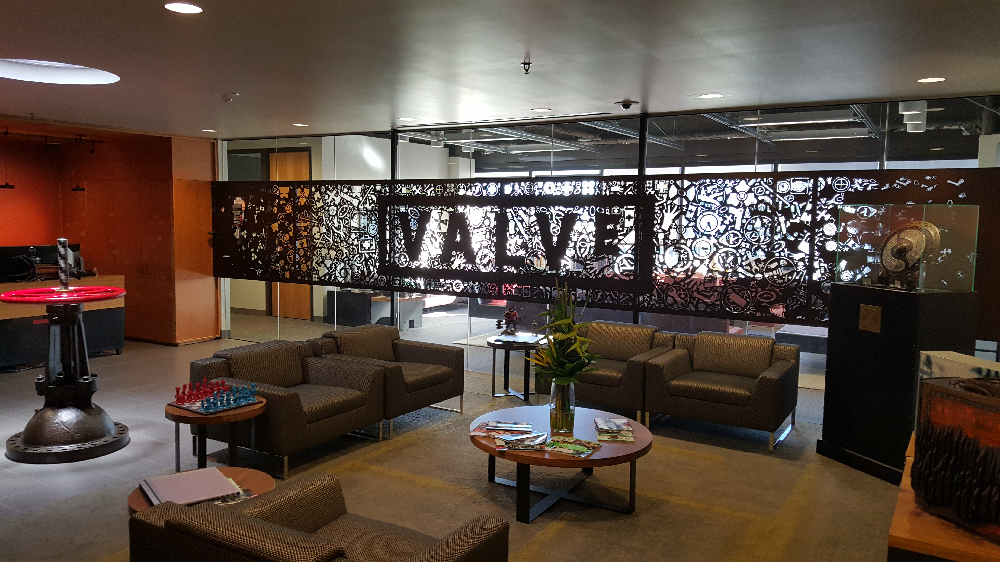
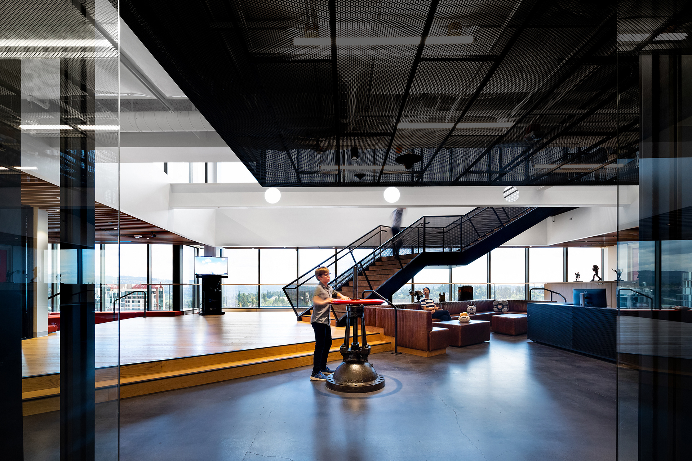
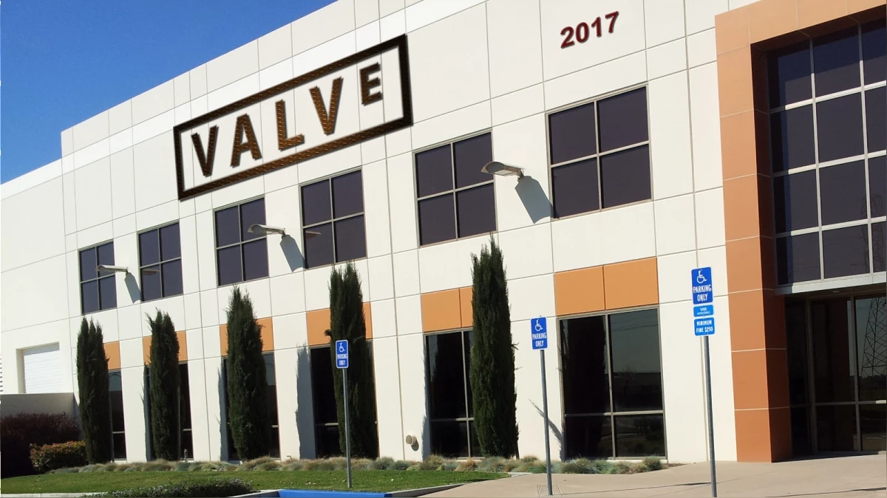
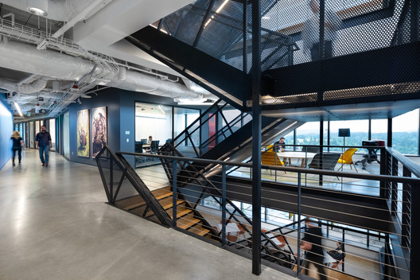
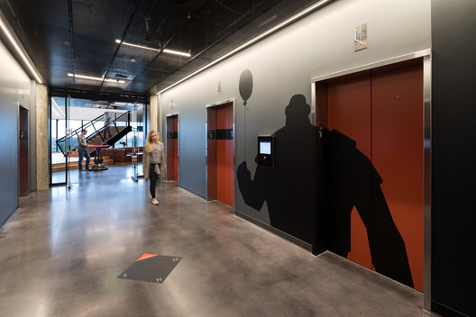
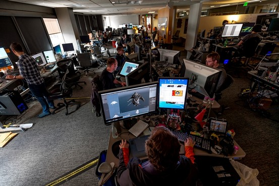

Sobre
Mais do que uma loja digital, a Steam se ergue como a grande biblioteca de Alexandria da era digital. É um ecossistema vivo onde o ato de jogar não se limita ao entretenimento, mas se funde com a própria sociabilidade, a descoberta e a curadoria coletiva. Desenvolvida pela Valve, sua narrativa é a de uma visionária que, em sua gênese, não apenas distribuiu software, mas arquitetou a infraestrutura que iria redesenhar toda a indústria dos games. Sua gênese foi um divisor de águas, um rompimento audacioso com os paradigmas estabelecidos de caixas e prateleiras. Ao criar uma plataforma que automatizava atualizações e combatia a pirataria, a Steam não apenas ofereceu conveniência, mas concedeu aos desenvolvedores um canal direto e vitalício para sua audiência. Foi o convite para que uma nova geração de criadores, independentes e gigantes, lançasse suas sementes em um solo fértil, dando origem a um jardim de gêneros que florescia em liberdade e diversidade. Ela plantou a semente de uma filosofia que se tornaria sua marca registrada: a democratização do acesso. A consolidação dessa visão veio quando a plataforma transcendeu radicalmente sua função utilitária original. Ela se infiltrou no cotidiano dos jogadores como o coração pulsante da comunidade, um centro de conexão total. Foi quando a marca percebeu que seu domínio não era apenas sobre bits e downloads, mas sobre a experiência compartilhada, o momento em que um amigo se conecta, uma conquista é exibida ou um mercado virtual ganha vida. Este foi o alicerce de um império, construído não por servidores, mas pela rede social de milhões. O terceiro capítulo dessa saga foi uma lição de resiliência e visão de futuro. Diante de um catálogo que se tornava vasto como um oceano, a plataforma dobrou a aposta na sofisticação, introduzindo peças fundamentais em seu legado: a curadoria algorítmica e as ferramentas de comunidade. Ao tecer uma rede de avaliações, fóruns e descobertas personalizadas em torno dos jogadores, transformou a compra solitária em uma cerimônia coletiva de recomendação. A ideia de que a comunidade é o melhor curador foi institucionalizada, criando um ciclo virtuoso de descobertas que solidificou um habitat, não uma simples loja. A quarta era representou um retorno triunfante à essência pura da inovação. Foi um renascimento focado na primazia da experiência do usuário e no empoderamento do criador. Seus recursos, como o Workshop e o Acesso Antecipado, operando como ateliês abertos, elevaram a relação jogador-criador a uma simbiose, onde cada mod era uma expansão e cada feedback, um alicerce. Esta fase não vendeu apenas jogos; vendeu participação ativa, a promessa de moldar, modificar e pertencer aos mundos que se amava. Hoje, a fronteira atual da marca é um monumento à ubiquidade e à acessibilidade absoluta. Seus instrumentos, como o Remote Play e a Steam Deck, são desenhados não para serem usados em um único lugar, mas para serem sentidos em qualquer lugar. Através da tecnologia que liberta as bibliotecas do desktop, a barreira entre a plataforma fixa e a portátil se dissolve. A estratégia expandiu-se, tornando seu catálogo lendário em uma experiência universal, provando que as grandes histórias em seu ventre são imensas o suficiente para ressoar em qualquer tela, a qualquer hora.
Fotos da empresa






Gabe Newell
Gabe Newell é um dos nomes mais influentes da indústria de jogos digitais. Formado em Ciência da Computação, ele iniciou sua carreira na Microsoft, onde atuou no desenvolvimento das primeiras versões do sistema operacional Windows. Em 1996, decidiu fundar a Valve Software, empresa responsável por títulos revolucionários como Half-Life e Half-Life 2, que elevaram o patamar de narrativa e imersão nos games. Sua contribuição mais significativa, porém, foi a criação da Steam. Lançada em 2003 como uma plataforma de atualização de jogos, tornou-se a maior loja digital de games para PC, transformando a forma como os jogos são distribuídos e consumidos. A Steam não apenas facilitou o acesso a milhares de títulos, mas também criou um espaço para desenvolvedores independentes lançarem seus projetos e para jogadores formarem uma comunidade global. Além disso, Newell foi um dos pioneiros na popularização dos eSports, com jogos como Counter-Strike e Dota 2 se tornando referências no cenário competitivo. Sua visão e inovação consolidaram a Steam como o principal ecossistema de jogos para PC, conectando milhões de jogadores e criadores ao redor do mundo.